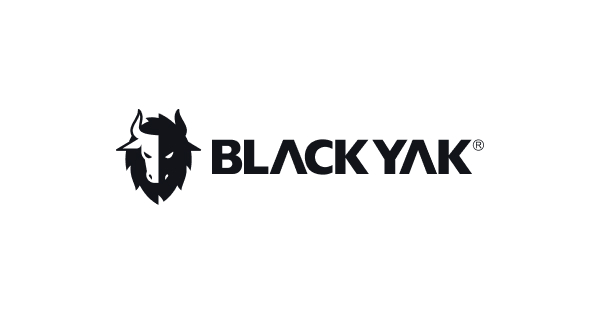

대표 로고대표 브랜드 마크
대표 로고대표 브랜드 마크홈 > 브랜드 매거진 > 휠라
휠라
휠라(FILA)는 1911년 이탈리아에서 창립된 스포츠웨어 브랜드로, 2007년 한국의 휠라코리아가 전 세계 브랜드 사업권을 인수해 현재 한국 기업(휠라홀딩스)이 소유한다.
산업 분야 스포츠·아웃도어 · 공개 등급 자료 기반 · 브랜드 평가 4.4 ★
한눈에 보는 브랜드
휠라(FILA)는 스포츠웨어 브랜드다. 1911년 이탈리아 비엘라 인근에서 필라 형제가 창립했으나, 1991년 설립된 휠라코리아가 2007년 전 세계 브랜드 사업권을 인수해 이탈리아 원조 브랜드를 한국 기업이 역인수한 사례가 됐다.
2020년 지주사 전환으로 휠라홀딩스가 됐다.
브랜드 관점
이탈리아에서 태어났지만 한국 기업이 글로벌 상표권을 인수해 본사가 된 독특한 스포츠 브랜드다.
시작과 성장
1911년 이탈리아 비엘라에서 휠라 형제가 창업했다. 1991년 휠라코리아가 설립됐고, 2007년 휠라코리아가 글로벌 상표권 전체를 인수해 한국 기업이 글로벌 본사가 됐다.
2011년 골프용품사 아쿠쉬네트를 인수했다.
브랜드 아이덴티티
테니스 후원으로 부상한 헤리티지 스포츠웨어 브랜드로, 복고풍 디자인의 재유행과 함께 글로벌 인기를 누렸다. 2011년 골프용품사 아큐시네트(타이틀리스트)를 인수해 골프 사업도 보유한다.
제품과 서비스
스포츠·캐주얼 의류·신발(FILA)과 골프용품(자회사 아쿠쉬네트의 타이틀리스트 골프공, 풋조이 등)을 다룬다.
사람들
현재 상태
2025년 지주사 사명을 미스토홀딩스로 바꿨고, 북미 골프 호조로 아쿠쉬네트 부문이 실적을 견인하고 있다.
타임라인
정리된 연도형 이벤트가 없습니다.
BI/CI 변천사
대표 로고대표 브랜드 마크함께 읽을 브랜드
EI
아이더
스포츠·아웃도어 · 자료 기반아이더아이더(EIDER)는 1962년 프랑스에서 설립돼 현재 한국 K2코리아가 전개·보유한 아웃도어 브랜드다.
 스포츠·아웃도어 · 편집 검수아디다스
스포츠·아웃도어 · 편집 검수아디다스아돌프 다슬러가 1948년에 설립한 독일의 스포츠 브랜드로 운동화, 운동복, 운동용품 등을 제조 · 판매함. 아디다스의 정의 및 기원 아디다스(adidas)는 바이에...
 스포츠·아웃도어 · 편집 검수파타고니아
스포츠·아웃도어 · 편집 검수파타고니아파타고니아는 아웃도어 브랜드이면서 동시에 소비를 줄이라는 역설적 메시지로 신뢰를 쌓은 브랜드다. 제품을 파는 기업이지만 브랜드의 설득력은 자연, 책임, 오래 쓰는 태...

스포츠·아웃도어 · 자료 기반블랙야크블랙야크(BLACKYAK)는 BYN블랙야크가 운영하는 대한민국의 아웃도어 브랜드다. 1973년 등산용품점 '동진'에서 출발한 그룹이 1995년 '블랙야크' 브랜드를...
 스포츠·아웃도어 · 자료 기반안다르
스포츠·아웃도어 · 자료 기반안다르안다르(Andar)는 2015년 설립된 한국의 애슬레저 브랜드로, 요가복·레깅스로 잘 알려져 있다.
 스포츠·아웃도어 · 자료 기반코오롱스포츠
스포츠·아웃도어 · 자료 기반코오롱스포츠코오롱스포츠(KOLON SPORT)는 코오롱인더스트리 FnC부문이 운영하는 대한민국의 아웃도어 브랜드다. 1973년 창립한 국내 1세대 아웃도어로, 고기능성 등산·아...
 스포츠·아웃도어 · 자료 기반챔스스포츠
스포츠·아웃도어 · 자료 기반챔스스포츠챔스 스포츠(Champs Sports)는 운동화·스포츠 의류·용품을 판매하는 미국의 스포츠 소매 체인이다.
스포츠·아웃도어 · 자료 기반네파네파(NEPA)는 1996년 이탈리아에서 시작해 2005년부터 한국에서 본격 전개된 아웃도어 브랜드다.